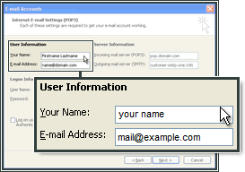
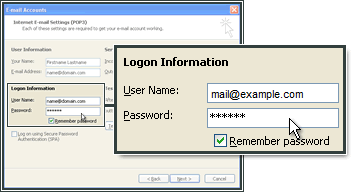
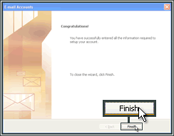
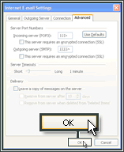

Microsoft Outlook 2003¶
Accedi ad Outlook e seleziona Strumenti. Fai clic su Account di posta elettronica.

Seleziona Aggiungi un nuovo account di posta elettronica.

Fai clic su Avanti.
Seleziona IMAP, quindi fai clic su Avanti.

Indica il tuo nome e l’indirizzo e-mail.
Come server della posta in entrata (IMAP), indica imap.frugan.it.
Come server della posta in uscita (SMTP), indica smtp.frugan.it.
Nella sezione Informazioni accesso indica l’indirizzo e-mail e la password che hai creato nel Pannello di controllo. | Seleziona la casella Crea un nuovo account di posta elettronica.
Configurazione del server SMTP in Outlook¶
Fai clic su Altre impostazioni.
Seleziona Server della posta in uscita, quindi Il server della posta in uscita (SMTP) richiede l’autenticazione. Fai clic su OK.

Fai clic su Avanti.

Fai clic su Fine.
Seleziona Impostazioni avanzate. In Outgoing mail (SMTP) (Posta in uscita), indica 465 e seleziona This server requires an encrypted connection (SSL).
Come Incoming mail (IMAP) (Posta in entrata), inserisci 993 seleziona This server requires an encrypted connection (SSL).
Fai clic su OK.
